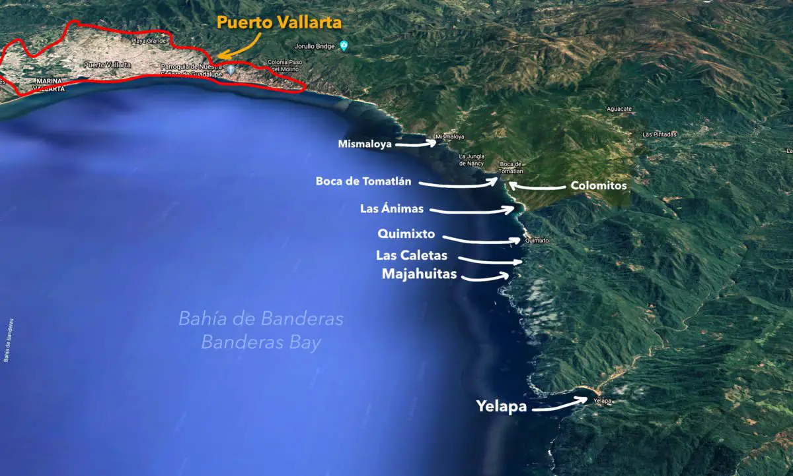
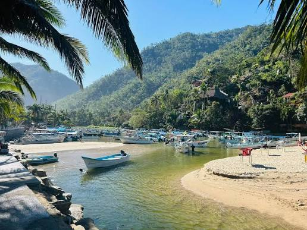

Boca, as everyone calls it, is a fishing village of about 660 people where the Horcones River comes down from the Sierra Madre and meets the Pacific. It sits on both banks of the river at the southern edge of Bahía de Banderas, about 11 km south of downtown Puerto Vallarta on Highway 200.
The name comes from the river mouth (boca) and Tomatlán, usually translated as "place of tomatoes." The settlement dates back to the 1500s. Today fishing pangas line the beach and the pier, and the same boats work as water taxis to beaches and villages down the coast that have no road: Las Ánimas, Quimixto, Majahuitas and Yelapa.
Small restaurants along the river and the beach grill fresh fish and shrimp, often over mesquite, and fishermen sell the morning catch on the beach. The village has small markets, coffee shops, taco stands, a pharmacy and ice-cream shops, so most days need no trip to town. Bring pesos in small bills: cash rules here and ATMs are scarce.
Where it is
Boca sits where the coast road ends its run south of Puerto Vallarta. Past Boca there is no road along the shore: Colomitos, Las Ánimas, Quimixto, Majahuitas and Yelapa are reached on foot or by boat.

The village and the river





Where I'm staying: Casa Cereza
Casa Cereza sits on the far side of the river from the main village, reached by pedestrian bridges, some of them seasonal. Hosts Cherry and Nick live on the property; cereza is Spanish for cherry. The three apartments share connected patios, an outdoor grill and the garden, and each has air conditioning and Wi-Fi. Casa Periquitos is the studio upstairs, with a private balcony for morning coffee and evening drinks. Paths are uneven and the roads partly unpaved, so it suits people who don't mind a rustic walk home.


Down the coast by boat